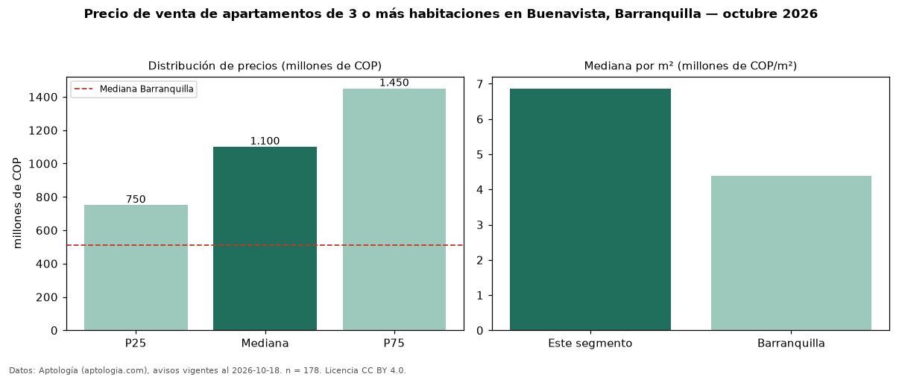

Precio de venta de apartamentos de 3 o más habitaciones en Buenavista, Barranquilla — octubre 2026
Con 178 avisos vigentes, el precio mediano de apartamentos de 3 o más habitaciones en venta en Buenavista, Barranquilla es COP 1,10 mil millones. Frente a la mediana de Barranquilla para apartamentos de 3 o más habitaciones (COP 510 millones), queda 116 % por encima. Por metro cuadrado, la mediana es COP 6,87 millones/m² (n = 178 avisos con área), 57 % por encima de Barranquilla (COP 4,38 millones/m²). Son 80 % de los 222 avisos de apartamentos en venta de la zona, cuya mediana general es COP 950 millones (+16 %). Con el precio por m² de arriendo del mismo segmento (COP 43.305/m² al mes), la rentabilidad bruta implícita es 7,6 % anual (aproximación con medianas de ofertas distintas). El área mediana anunciada es 155 m². La administración mediana declarada es COP 824.000 al mes (n = 125). La mitad central de los avisos va de COP 750 millones a COP 1,45 mil millones (razón 1,9), una dispersión moderada. Datos: Aptología (aptologia.com), CC BY 4.0 — https://www.aptologia.com/venta/barranquilla/buenavista. Archivos: PDF, CSV con las cifras y gráfica PNG.

| Avisos únicos | 178 |
|---|---|
| Percentil 25 | COP 750.000.000 |
| Mediana | COP 1.100.000.000 |
| Percentil 75 | COP 1.450.000.000 |
| Mediana por m² | COP 6.866.762 |
Fuente: avisos vigentes de portales inmobiliarios recopilados por Aptología, deduplicados (mínimo 30 avisos únicos por celda). Precios pedidos, no cerrados. Fecha: 2026-10-18.